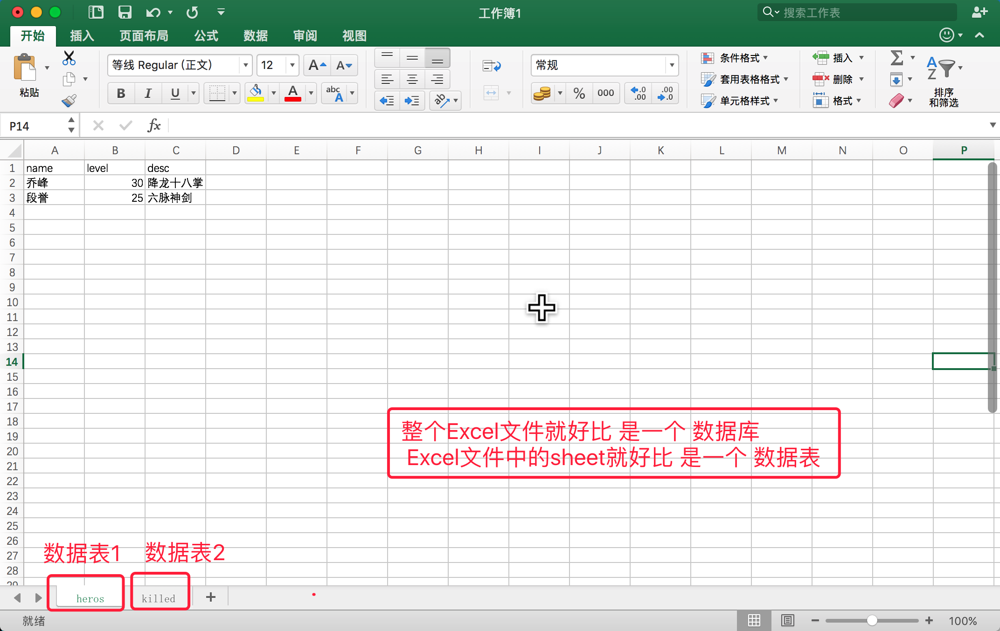

1.1数据库简介
数据存储
- 以前是这样记录的：结绳记事

- 也有这样记录的：甲骨

- 后来开始这样记录：图书

传统记录数据的缺点:
- 不易保存
- 备份困难
- 查找不便
现代化手段----文件
- 使用简单，例如python中的open可以打开文件，用read/write对文件进行读写，close关闭文件
- 对于数据容量较大的数据，不能够很好的满足，而且性能较差
- 不易扩展
现代化手段----数据库
- 持久化存储
- 读写速度极高
- 保证数据的有效性
- 对程序支持性非常好，容易扩展
真实的仓库是这样的:

我们看到的是这个样子的

顾客看到的是这个样子的:

数据库
数据库就是一种特殊的文件，其中存储着需要的数据

关系型数据库核心元素
- 数据行(记录)
- 数据列(字段)
- 数据表(数据行的集合)
- 数据库(数据表的集合)

所谓的关系型数据库RDBMS，是建立在关系模型基础上的数据库，借助于集合代数等数学概念和方法来处理数据库中的数据
常用的数据库已经类型：

类型：
关系型数据库核心元素
数据行(一条记录,相当于 Python 的实例对象)
数据列(字段,相当于 Python 中实例对象的属性)
数据表(数据行的集合,相当于Python 中的列表)
数据库(数据表的集合,一个数据库中能够有n多个数据表)
sql主要是用来操作关系型数据库的一本语言，称之为结构化查询语句。
sql语句主要分为：
DQL：数据查询语言，用于对数据进行查询，如select
DML：数据操作语言，对数据进行增加、修改、删除，如insert、udpate、delete
TPL：事务处理语言，对事务进行处理，包括begin transaction、commit、rollback
DCL：数据控制语言，进行授权与权限回收，如grant、revoke
DDL：数据定义语言，进行数据库、表的管理等，如create、drop
CCL：指针控制语言，通过控制指针完成表的操作，如declare cursor
对于一般的开发人员主要学习DQL,DML,就是我们常说的增删改查！
MySQL 简介
- 点击查看MySQL官方网站
- MySQL是一个关系型数据库管理系统，由瑞典MySQL AB公司开发，后来被Sun公司收购，Sun公司后来又被Oracle公司收购，目前属于Oracle旗下产品
特点
- 使用C和C++编写，并使用了多种编译器进行测试，保证源代码的可移植性
- 支持多种操作系统，如Linux、Windows、AIX、FreeBSD、HP-UX、MacOS、NovellNetware、OpenBSD、OS/2 Wrap、Solaris等
- 为多种编程语言提供了API，如C、C++、Python、Java、Perl、PHP、Eiffel、Ruby等
- 支持多线程，充分利用CPU资源
- 优化的SQL查询算法，有效地提高查询速度
- 提供多语言支持，常见的编码如GB2312、BIG5、UTF8
- 提供TCP/IP、ODBC和JDBC等多种数据库连接途径
- 提供用于管理、检查、优化数据库操作的管理工具
- 大型的数据库。可以处理拥有上千万条记录的大型数据库
- 支持多种存储引擎
- MySQL 软件采用了双授权政策，它分为社区版和商业版，由于其体积小、速度快、总体拥有成本低，尤其是开放源码这一特点，一般中小型网站的开发都选择MySQL作为网站数据库
- MySQL使用标准的SQL数据语言形式
- Mysql是可以定制的，采用了GPL协议，你可以修改源码来开发自己的Mysql系统
- 在线DDL更改功能
- 复制全局事务标识
- 复制无崩溃从机
- 复制多线程从机
开源 免费 不要钱 使用范围广,跨平台支持性好,提供了多种语言调用的 API
是学习数据库开发的首选